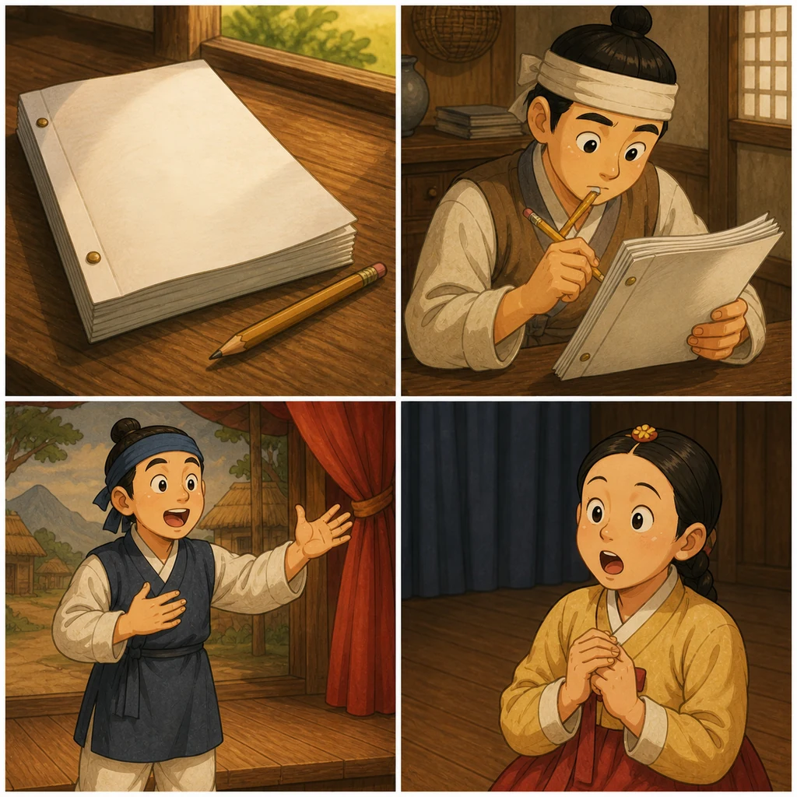

공연 전체를 준비하는 글
인물, 장면, 행동, 대사가 함께 적힌 글입니다. 배우는 대본을 읽으며 자신의 역할을 이해합니다.
감독님은 배우들에게 대본을 먼저 읽게 했어요.
대본: kịch bản, bản viết đầy đủ cho vở kịch.Vocabulary Support 2
`대본`은 전체 글이고, `대사`는 배우가 실제로 말하는 문장입니다. 같은 장면 안에서 두 단어를 정확히 나누어 써 봅니다.

인물, 장면, 행동, 대사가 함께 적힌 글입니다. 배우는 대본을 읽으며 자신의 역할을 이해합니다.
대본: kịch bản, bản viết đầy đủ cho vở kịch.역할을 맡은 사람이 직접 말하는 문장입니다. 대사는 목소리, 표정, 몸짓과 함께 연습합니다.
대사: lời thoại mà diễn viên nói trên sân khấu.Mini Check